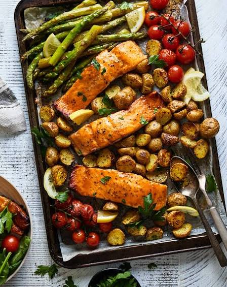

Sheet Pan Salmon & Vegetables

Description
A stress-free, low-carb dinner baked completely on a single pan for effortless preparation and minimal clean-up.
Ingredients
- 2 salmon fillets
- 1 cup broccoli florets
- 1 bell pepper, sliced
- 1 tablespoon olive oil
- 1 lemon, sliced into rounds
- 1/2 teaspoon garlic powder
- 1/2 teaspoon salt
- 1/4 teaspoon black peppert
Method
- Preheat the Oven: Set your oven to 200°C (400°F) and line a large baking sheet with parchment paper.
- Arrange the Ingredients: Place the salmon fillets in the center of the baking sheet. Scatter the broccoli florets and sliced bell peppers around the fish.
- Season Everything: Drizzle the olive oil over the salmon and vegetables. Evenly sprinkle the garlic powder, salt, and black pepper over everything.
- Add Lemon: Place the lemon slices directly on top of the salmon fillets for extra flavor.
- Bake and Serve: Roast in the oven for 12–15 minutes until the vegetables are tender and the salmon flakes easily with a fork. Serve hot.